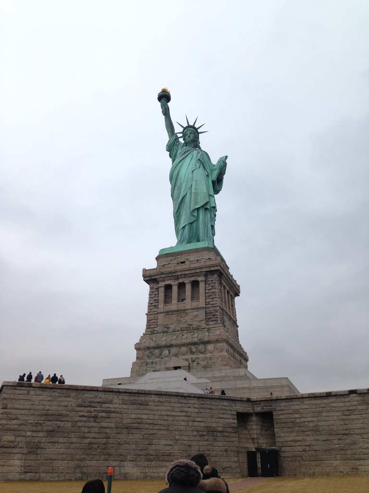

Travel
Bangkok


Geographical Location: Southeast Asia
Bangkok, Thailands capital, is a large city known for ornate shrines and vibrant street life. It is officially known in Thai as Krung Thep Maha Nakhon and colloquially as Krung Thep.
Bangkok welcomes more visitors than any other city in the world and it doesn’t take long to realize why. Bangkok is a city of contrasts with action at every turn. Marvel at the gleaming temples, catch a tuk tuk through bustling Chinatown or take a longtail boat through floating markets. Food is another Bangkok highlight, from local dishes served at humble street stalls to haute cuisine at romantic rooftop restaurants.
Photo Gallery

Khlong Lat Mayom, one of the best floating markets in Bangkok.It is most famous for its food. Try snakehead fish and the shrimps


New York

Geographical Location: Northeast US
New York City comprises 5 boroughs sitting where the Hudson River meets the Atlantic Ocean.
At its core is Manhattan, a densely populated borough thats among the worlds major commercial, financial and cultural centers. Its iconic sites include skyscrapers such as the Empire State Building and sprawling Central Park. Broadway theater is staged in neon-lit Times Square.